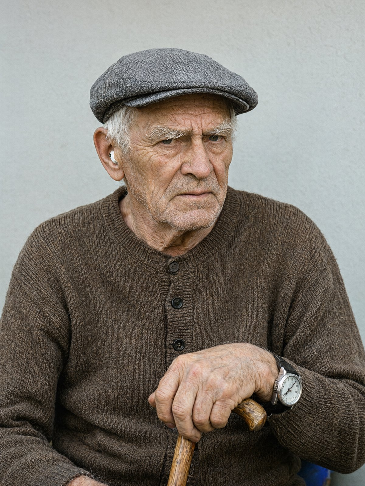

ГАЛИЦЬКЕ ВІДДІЛЕННЯ ПОЛІЦІЇ ГУНП У ЛЬВІВСЬКІЙ ОБЛАСТІ м. Львів, 13 листопада 2024 року, 14:30
Пояснення відібрав: капітан поліції Стасюк О.М., старший слідчий СВ.
Особа, що дає пояснення: Кравець Богдан Степанович, 71 рік (нар. 02.01.1953), пенсіонер, 38 років інженер-диспетчер Львівської залізниці.
Проживає: м. Львів, вул. Ґерданська, 9, кв. 4.
Роз'яснення прав. Слідчий роз'яснив, що відповідно до статті 63 Конституції України ніхто не зобов'язаний давати показання або пояснення щодо себе, членів своєї сім'ї та близьких родичів. Пояснення дається добровільно. Я все зрозумів, права мені ясні.
/підпис/ Кравець Б.С.
Пишіть, пане капітане, пишіть. Тільки по порядку, як я звик, бо я сорок років на залізниці по розкладу працював, і без порядку мені нема чого казати.
Ввечері дванадцятого світло пропало ще о шостій, як завжди тепер. Я сидів у вітальні, біля вікна, зі свічкою, бо від неї хоч трохи видно. Радіо слухав, на батарейках, бо дрібний шум у ньому мені потрібен, щоб не думати. Нічого особливого я не робив, і до восьмої звечора теж нічого не пам'ятаю, крім радіо.
Питання: Чи бачили ви щось на вулиці того вечора?
Так, бачив. Близько пів на дев'яту, ну, я сказав би «близько пів на дев'яту», але як подумати, то вже трохи після, без чверті дев'ята, я якраз підійшов до вікна після новин. Під брамою, з вулиці, стояв джип. Чорний, великий, як корова, таких я не люблю. Номер я бачив, «ВС 77», далі не роздивився, бо дощ ішов і ліхтаря біля брами нема, світла ж нема.
Потім з того джипа вийшов чоловік у пальті. Підійшов до вікна кабінету Сенишина, того, що виходить на вулицю, і стукав. Довго стукав. Світив телефоном, я бачив, як блимало. Я не відчинив вікна, не вийшов, з палицею куди мені. Я просто сидів і дивився.
Питання: Чи бачили ви обличчя цього чоловіка?
Ні. Він стояв спиною до вуличного ліхтаря, якого, я вам кажу, немає. Пальто темне, не скажу, яке саме. Високий, не старий, але ж я в своєму віці всіх молодими бачу.
Питання: Чи бачили ви, коли джип від'їхав?
Ні. Я відійшов від вікна, почав собі готувати чай на свічці, а коли глянув знову — уже нема. Не записував, бо кому записувати.
Питання: Чи чули ви щось пізніше того вечора?
Так. О двадцять третій сорок, на годинник дивився, мій годинник не бреше, я його на «Політі» все життя звіряю, — глухий удар. Знизу, з контори. Наче щось важке впало на підлогу, аж у мене в кімнаті відчулось. Я сидів, ще не спав, я ж лягаю після одинадцятої, та ще й не мав сну. Потім о двадцять третій п'ятдесят клацнули двері Сенишина. Замок у нього старий, клацає, як курок. Я то добре чую, бо двері його навпроти моїх.
Подумав: Максим, мабуть, пізно прийшов. Він часто так ходить, тихо, але з ключем клацає, ніби поспішає. Я не встав, бо ніч, а сходи в мене, сами знаєте, які.
Питання: Чи чули ви раніше того вечора чиїсь кроки чи голоси з квартири Сенишина або з контори?
Ні. Я не чув. Світла не було, радіо грало, я ж казав. Тихо було, тільки дощ по вікні.
Питання: Які у вас були стосунки з Андрієм Сенишиним?
Ви питаєте чесно — то я вам скажу чесно. Не любив. Не приховую, нізащо. Ну, я вам розкажу, бо ви ж усе одно знайдете. Мій брат Степан, царство йому небесне, у дві тисячі шістнадцятому році хворів, і при ньому була доглядальниця. Вона зробила заповіт на себе, а Сенишин той заповіт посвідчив. Степан уже слова сказати не міг як слід. Я писав скарги, двічі, до Мін'юсту. Нічого не вийшло, мені відповіли, що порушень не встановлено. Я вірю, що порушення були, але доказів у мене немає, я ж не нотаріус, я диспетчер.
Ще в дві тисячі восьмому він переробив сходи між конторою і квартирою, без дозволу, я писав і туди. Та то дрібниці. Сусідами ми були чужими, він мене вважав сварливим старим, я його — шахраєм. Я з ним не розмовляв років десять, тільки «добрий день» на сходах.
Питання: Чи хотіли ви його смерті?
Слухайте. Не любив — так. Щоб убивати — то Бог йому суддя. Я не душогуб, я з палицею ходжу, ліва рука в мене від інсульту два роки тому слабка, я чашку тримаю з трудом. Важке щось підняти — і то я вже не можу. Якщо справді він сам не впав, то хай слідство розбирається. Я не вбивця. Брехати я не вмію, мене на залізниці вчили точності.
Питання: Чи бачили ви Соломію Дзюбу сьогодні вранці?
Так. Пів на дев'яту, ну, може, трохи раніше. Я з кухні дивився у двір, там у мене кухонне вікно. Бачив, як Соломія Романівна зайшла у двір і пішла до контори. Вона там ключ має, вона прийшла рано, відімкнула двері і зайшла. Більше я нічого не бачив, я тоді чай пив.
Питання: Є щось, що ви хотіли б додати?
Тільки одне. Я не знаю, що там сталося, і не хочу нікого кривдити. Але якщо правда, що він не сам упав, тоді я дуже хочу, щоб це знайшли. Бо по розкладу все має бути вчасно, а тут уже скільки доби все не на своєму місці.
Пояснення прочитано мною, зауважень і доповнень не маю. З моїх слів записано вірно.
/підпис/ Кравець Б.С.
Пояснення відібрав: капітан поліції Стасюк О.М. /підпис/
13.11.2024, 15:20